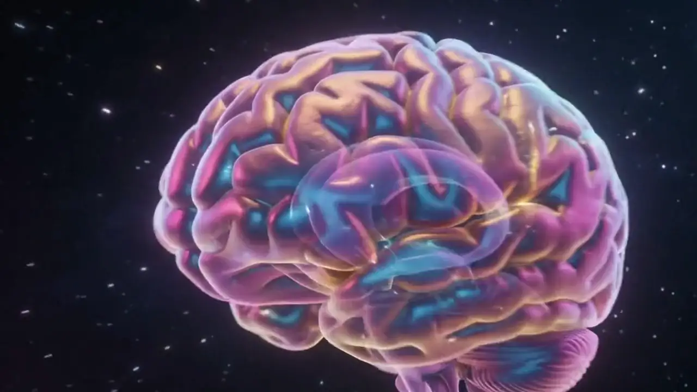
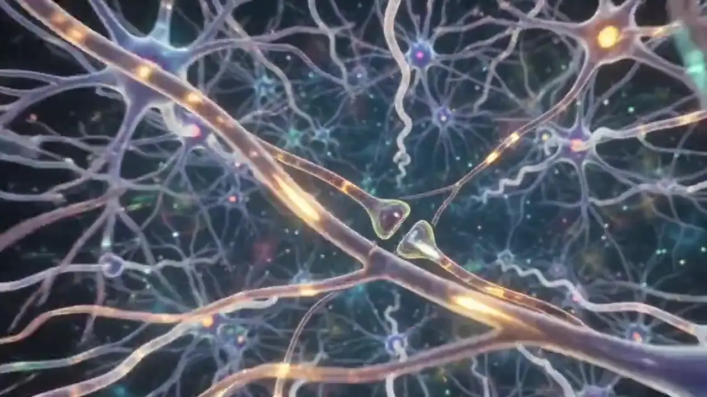
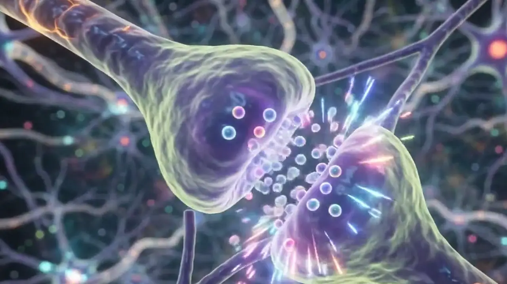
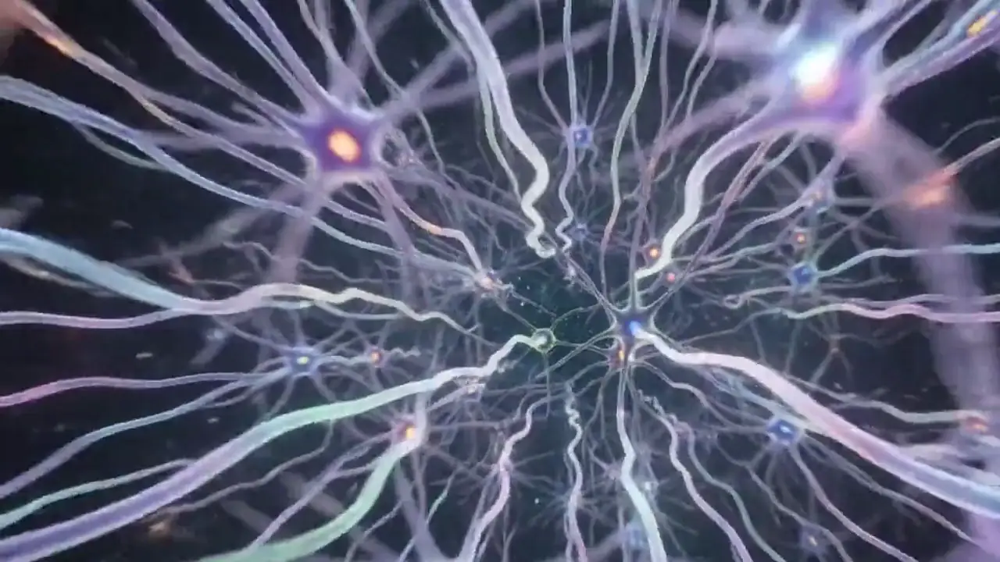
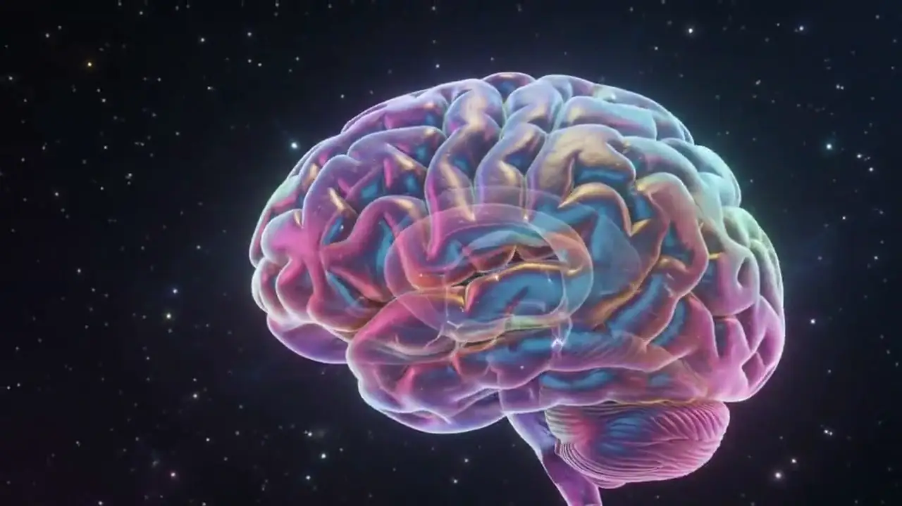

Plate 01 · Whole organ
The organ that changes
About 1.4 kilograms. Roughly 86 billion neurons. Continuously reshaped by what you do, and by what happens to you.
Cerebrum
Cerebellum
Brainstem
Plate 01 · Whole organ
About 1.4 kilograms. Roughly 86 billion neurons. Continuously reshaped by what you do, and by what happens to you.
Plate 02 · Approaching the cortex
Anxiety, low mood and old habits run on the same machinery as everything else you have ever learned. That is what psychological therapy works with.
Plate 03 · Cortical surface
The folded surface is only two to four millimetres thick. Beneath it sits the tissue that holds every habit you have.
Plate 04 · Cortical tissue
Neurons do not work alone. They work in networks — and networks are shaped by repetition.
Plate 05 · The synapse
Two neurons never touch. Signals cross a gap around 20 nanometres wide. Connections used together grow stronger; connections left unused fade. That is the machinery therapy works with.
Ninety-two frames, re-cut from the source film into a single unbroken descent — whole organ, through the cortical surface, into the tissue, to one synapse.





Nothing on this page is a promise about outcomes. It is a description of the machinery that psychological therapy works with — the same machinery that learned every habit you already have.